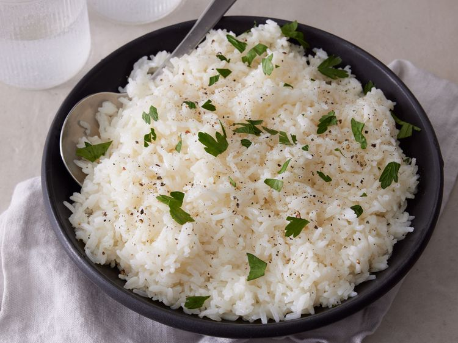

Baked Rice

Oven Baked Rice
Description
Baked rice is my favorite way to prepare rice! Can be easily doubled — just use a larger baking dish.
ingredients
- 1 cup jasmine rice (such as Mahatma®)
- 2 ¼ cups water
- ¼ cup butter
- 1 teaspoon salt
- 1 teaspoon white vinegar
Steps
- Step1: Preheat the oven to 325 degrees F (165 degrees C). Gather all ingredients. Grease a 2 1/2-quart baking dish. /li>
- Step2: Pour rice into the prepared baking dish.
- Step3: Stir water, butter, salt, and vinegar together in a saucepan over medium heat.
- Step4: Bring to a rolling boil, then pour over rice; stir to combine.
- Step5: Bake in the preheated oven until water is absorbed and rice is tender, 20 to 25 minutes.
Home